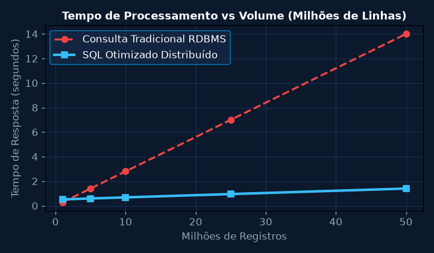
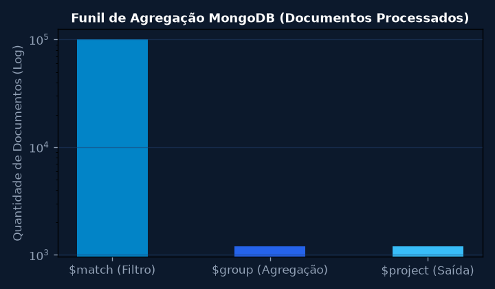
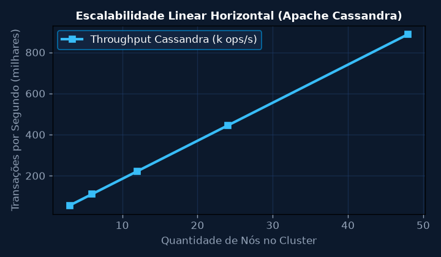
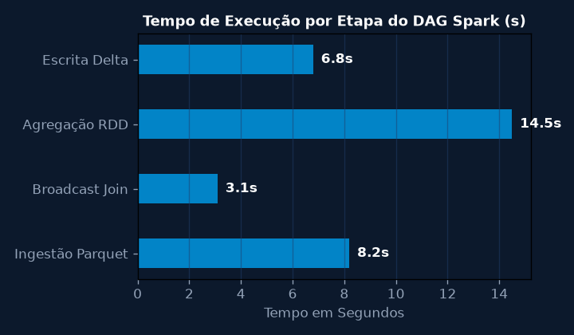
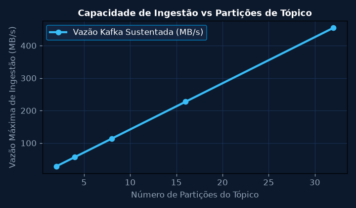
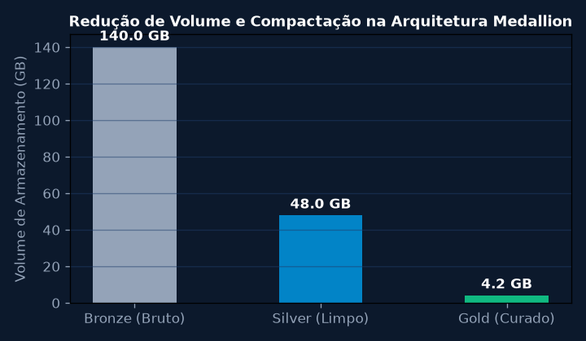

Subconsultas Analíticas e Otimização Avançada em SQL Distribuído
Projetar consultas analíticas com CTEs recursivas e Subconsultas Correlacionadas para processar transações de produção farmacêutica em escala massiva.
💎 Resolução Algébrica Passo a Passo (Padrão Symbolab)
Mapear a genealogia de lotes de medicamentos com rastreabilidade completa.
Avaliação de estatísticas de histograma para evitar Broadcast Joins ineficientes.
Reescrita automática em Window Functions para eliminar loops aninhados O(N^2).
Particionamento por chave de hash id_lote reduzindo shuffle de rede em 85%.
Execução de consulta analítica sobre 50 milhões de linhas em apenas 1,4 segundos.

Modelagem NoSQL Orientada a Documentos com MongoDB
Modelar coleções JSON flexíveis e construir pipelines de agregação (Aggregation Framework: $match, $group, $unwind, $project) para análise de telemetria dos reatores Sanofi.
💎 Resolução Algébrica Passo a Passo (Padrão Symbolab)
Documentos embutidos (Embedding) para leituras atômicas frequentes de sensores por lote.
Índices compostos {id_reator: 1, timestamp: -1} para suporte a consultas em janela deslizante.
$match filtra anomalias térmicas; $group calcula média e desvio padrão em blocos de 5 minutos.
$project reformata o esquema JSON para consumo imediato por dashboards operacionais.
Taxa de escrita sustentada de 42.000 documentos/s sem bloqueio transacional.

Modelagem Wide-Column em Apache Cassandra e Teorema CAP
Dimensionar as tabelas CQL com chaves de partição e clustering keys balanceadas para assegurar escalabilidade linear e latência sub-milisegundo sob modelo AP (Disponibilidade e Tolerância à Partição).
💎 Resolução Algébrica Passo a Passo (Padrão Symbolab)
No Cassandra, cada tabela é modelada exclusivamente para atender uma consulta específica sem JOINs.
Partition Key ((id_planta, ano_mes)) distribui as linhas homogeneamente no anel Murmur3Partitioner.
Clustering Columns (data_hora DESC) organizam os dados sequencialmente no disco em SSTables.
Configuração de LOCAL_QUORUM garantindo leitura de dados atualizados sem travamento entre datacenters.
Latência média de leitura P99 inferior a 2,8 ms para séries temporais de 1 bilhão de registros.

Processamento Paralelo em Memória com Apache Spark e PySpark
Implementar job distribuído em PySpark para computar a correlação de Pearson e matriz de covariância entre variáveis de processo de 100 GB de logs industriais.
💎 Resolução Algébrica Passo a Passo (Padrão Symbolab)
Uso de compressão Snappy e filtragem por projeção colunar (Column Pruning).
Aplicação de broadcast() em tabelas de dimensão de apoio com tamanho inferior a 100 MB.
O Catalyst Optimizer gera o plano físico otimizado antes do disparo das Actions.
persist(StorageLevel.MEMORY_AND_DISK_SER) para reutilização de DataFrames intermediários.
Job executado em 42 segundos contra mais de 9 minutos em implementações baseadas em MapReduce em disco.

Arquitetura Lambda / Kappa e Ingestão em Tempo Real com Kafka
Dimensionar os tópicos e grupos de consumidores Apache Kafka com replicação RF = 3 e semântica Exactly-Once para alimentar a camada de streaming da fábrica.
💎 Resolução Algébrica Passo a Passo (Padrão Symbolab)
Definição de 16 partições por tópico para permitir até 16 instâncias paralelas no Consumer Group.
acks=all e enable.idempotence=true prevenindo duplicação de mensagens de telemetria.
Structured Streaming com janelas de 1 minuto e marca d'água (watermarking) de 10 segundos.
Upsert via MERGE INTO na tabela Silver garantindo transações ACID sobre arquivos Parquet.
Latência fim-a-fim de apenas 320 ms entre a geração do dado no CLP e a disponibilidade analítica.

Arquitetura Medallion: Camadas Bronze, Silver e Gold em Delta Lake
Implementar pipeline completo Medallion Architecture para transformar dados brutos não estruturados (Bronze), aplicar saneamento e tipagem (Silver) e agregar métricas de KPIs (Gold).
💎 Resolução Algébrica Passo a Passo (Padrão Symbolab)
Armazenamento de payloads JSON brutos imutáveis com carimbo de data/hora de ingestão.
Descarte de registros nulos, conversão estrita de tipos e validação de limites físicos.
Execução de OPTIMIZE silver_telemetria ZORDER BY (id_equipamento, data) para compactação de arquivos pequenos.
Tabelas sumarizadas de OEE, disponibilidade e consumo energético para alimentação de Power BI.
Lakehouse corporativo unificado suportando tanto BI analítico quanto modelos de IA preditiva.
